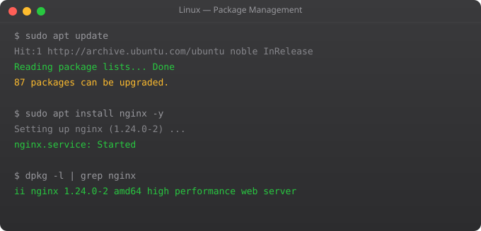

Shell scripting is the automation superpower of Linux. Every task you do repeatedly in the terminal is a candidate for a script. Backup files, deploy applications, restart services, clean up logs, check disk space and alert if low -- all of these are 10-50 line bash scripts that run automatically and save hours of manual work every week.
I still remember the first time I wrote a script that automated our deployment process. What took 15 manual steps and 20 minutes of careful attention became a 30-second automated process. That script ran thousands of times without a single manual mistake. That is the power of shell scripting.
#!/bin/bash
# The shebang line tells the OS which interpreter to use
# Comments explain what the script does
echo "Script started at $(date)"
# Variables
APP_NAME="myapp"
DEPLOY_DIR="/home/ubuntu/${APP_NAME}"
LOG_FILE="/var/log/${APP_NAME}/deploy.log"
echo "Deploying ${APP_NAME} to ${DEPLOY_DIR}"chmod +x deploy.sh # Make executable
./deploy.sh # Run from current directory
bash deploy.sh # Run with bash explicitly
/home/ubuntu/deploy.sh # Run with full path#!/bin/bash
# Positional arguments
ENVIRONMENT=$1 # First argument
VERSION=$2 # Second argument
# Special variables
echo "Script name: $0"
echo "All args: $@"
echo "Arg count: $#"
echo "Last exit code: $?"
echo "Process ID: $$"
# Command substitution
CURRENT_DATE=$(date +%Y-%m-%d)
DISK_USAGE=$(df -h / | tail -1 | awk "{print $5}")
# Read user input
read -p "Enter deployment environment: " ENV
read -sp "Enter password: " PASSWORD # -s = silent#!/bin/bash
ENV=$1
if [ -z "$ENV" ]; then
echo "Error: Environment required"
echo "Usage: $0 "
exit 1
fi
if [ "$ENV" == "production" ]; then
echo "Deploying to production"
DEPLOY_HOST="prod.example.com"
elif [ "$ENV" == "staging" ]; then
echo "Deploying to staging"
DEPLOY_HOST="staging.example.com"
else
echo "Unknown environment: $ENV"
exit 1
fi
# File checks
[ -f "/etc/nginx/nginx.conf" ] && echo "Nginx config exists"
[ -d "/var/log/app" ] || mkdir -p /var/log/app
[ -r "$FILE" ] && echo "File is readable"
# Numeric comparison
DISK_PCT=85
if [ $DISK_PCT -gt 90 ]; then
echo "CRITICAL: Disk almost full"
elif [ $DISK_PCT -gt 80 ]; then
echo "WARNING: Disk usage high"
fi # for loop over list
for server in web1 web2 web3; do
echo "Deploying to $server"
ssh ubuntu@$server "sudo systemctl restart myapp"
done
# for loop with range
for i in $(seq 1 5); do
echo "Attempt $i"
done
# for loop over files
for logfile in /var/log/nginx/*.log; do
echo "Processing: $logfile"
gzip "$logfile"
done
# while loop
ATTEMPT=0
while [ $ATTEMPT -lt 3 ]; do
curl -sf http://localhost/health && break
ATTEMPT=$((ATTEMPT + 1))
echo "Health check failed, attempt $ATTEMPT"
sleep 5
done
# Read file line by line
while IFS= read -r line; do
echo "Processing: $line"
done < servers.txt#!/bin/bash
# Function definitions
log() {
echo "[$(date +%H:%M:%S)] $1" | tee -a /var/log/deploy.log
}
check_health() {
local url=$1
local max_attempts=5
local attempt=0
while [ $attempt -lt $max_attempts ]; do
if curl -sf "$url/health" > /dev/null 2>&1; then
log "Health check passed"
return 0
fi
attempt=$((attempt + 1))
log "Health check failed ($attempt/$max_attempts)"
sleep 10
done
return 1
}
# Call functions
log "Starting deployment"
if ! check_health "http://localhost:8000"; then
log "ERROR: Service unhealthy after deployment"
exit 1
fi#!/bin/bash
set -e # Exit on any error
set -u # Error on undefined variables
set -o pipefail # Pipes fail if any command fails
# Trap for cleanup on exit
cleanup() {
echo "Cleaning up..."
rm -f /tmp/deploy.lock
}
trap cleanup EXIT
trap "echo ERROR: Script failed on line $LINENO; exit 1" ERR
# Check prerequisites
command -v docker >> /dev/null || { echo "Docker not found"; exit 1; }
# Safe variable expansion
echo "${VARIABLE:-default_value}" # Use default if unset#!/bin/bash is the shebang -- it tells the OS which interpreter to use when executing the script directly. Without it, the script runs in your current shell which may not be bash. Always include it as the first line of every bash script.
bash -x script.sh runs the script with execution trace -- shows each command before running it. Add set -x inside the script to enable tracing from that point. set -e makes the script exit on any error, which is good practice for production scripts.
"$@" expands to separate quoted arguments: "$1" "$2" "$3". "$*" expands to a single string: "$1 $2 $3". Use "$@" when passing arguments to another command to preserve argument boundaries with spaces.
Check $? (exit code): 0 = success, non-zero = failure. Use && for run-if-success: command && echo "OK". Use || for run-if-fail: command || exit 1. Use if command; then ... to check in a conditional.
Use cron for time-based scheduling. crontab -e opens your crontab. "0 2 * * * /home/ubuntu/backup.sh" runs backup.sh at 2am daily. Or use systemd timers for more advanced scheduling with better logging and dependency management.
In Part 8, we cover cron jobs -- scheduling your scripts to run automatically at specific times.
← Back to Blog